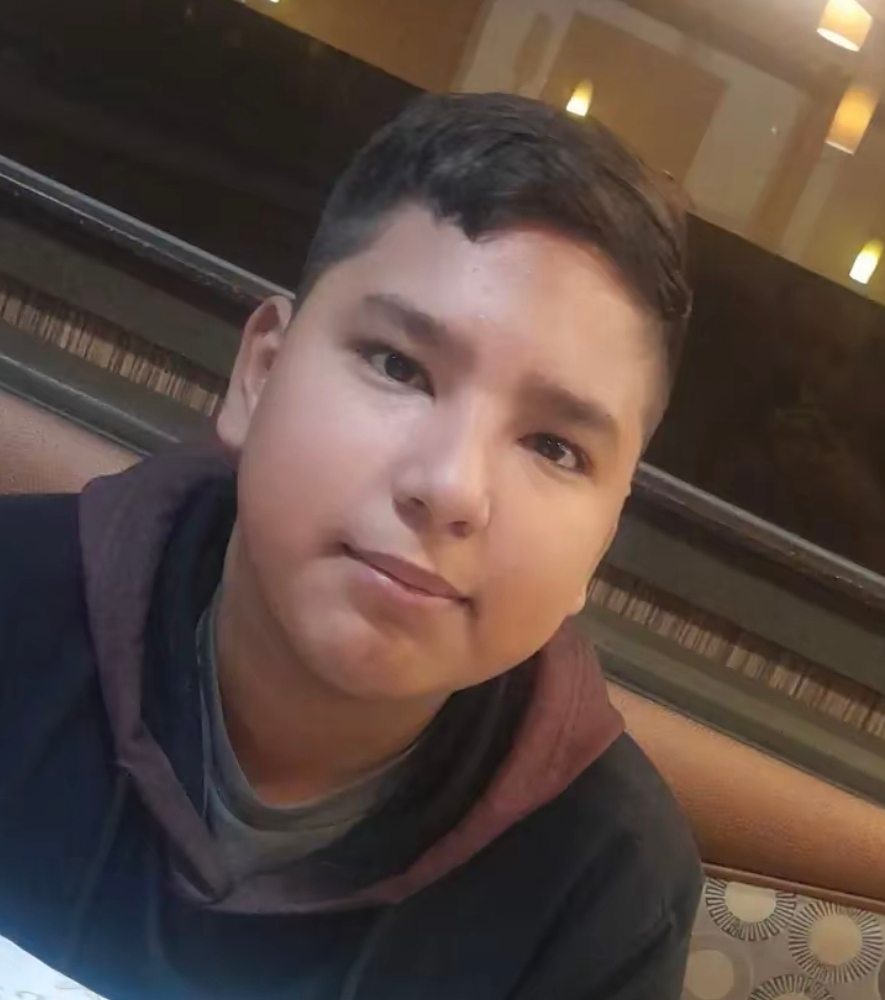

en esta biografia me conoceras mejor

Nací y me crié en Los Mochis, Sinaloa, bien acostumbrado al calorón del valle, la buena comida y todas las tradiciones del norte. Ahorita ando cursando el quinto semestre de preparatoria, librando las materias de este penúltimo jalón del bachillerato mientras combino los estudios con lo que me apasiona.
Durante mi paso por la prepa formé parte de la Banda de Guerra como tamborilero, donde le agarré el gusto a las marchas, la disciplina, los ensayos en escuadra y el retumbar del tambor, experiencia que fui combinando con mi inquietud por las artes visuales y la escultura en materiales como madera, cerámica y piedra.
Inspirándome siempre en la identidad sinaloense y en detalles de la cultura Yoreme-Mayo, he podido estar presente en desfiles cívicos de la ciudad, eventos escolares y exposiciones juveniles, demostrando que en la ciudad de las palmeras los jóvenes traemos talento, enfoque y muchas ganas de salir adelante.
| Año | Suceso |
|---|---|
| 2009 | Nacimiento. |
| 2019 | empezo la secundaria. |
| 2024 | empezo a tocar en la banda de guerra. |
| 2026 | creacion de la biografia. |
instagram: insta_de_julio